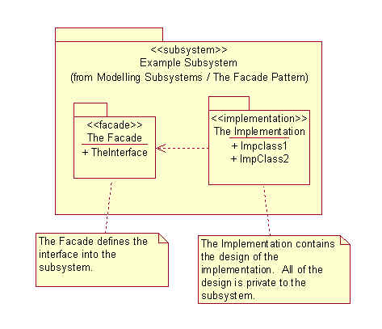
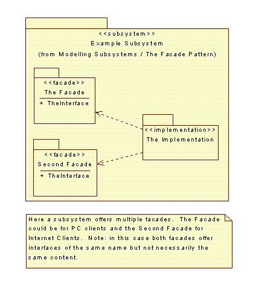
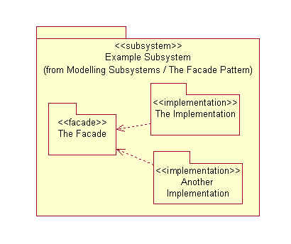
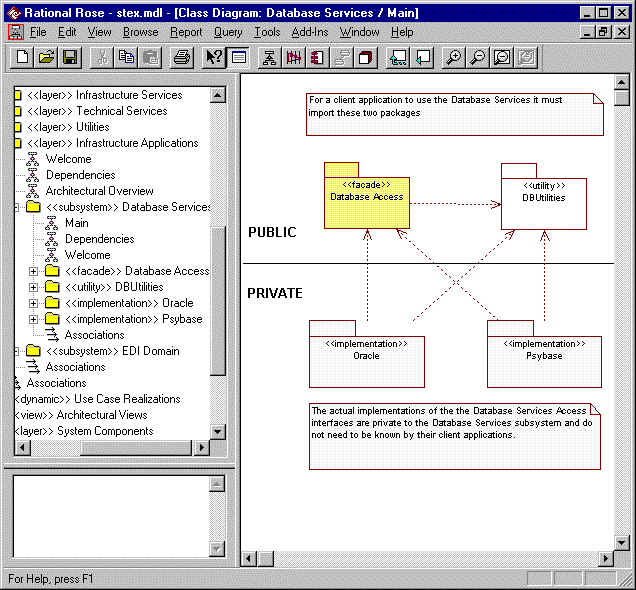
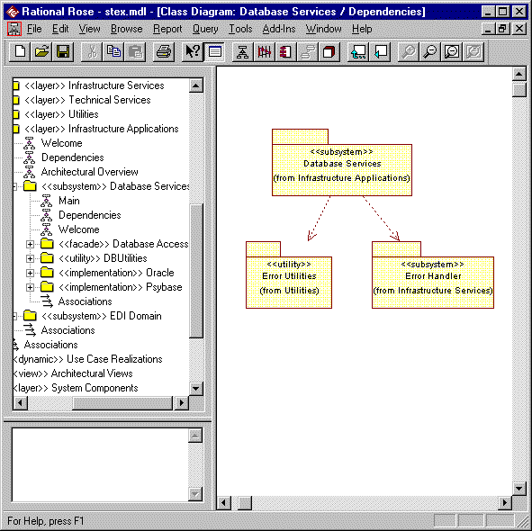

Standards: Formal <<subsystem>>
Topics
Introduction
Structuring a system into subsystems helps reduce
complexity, promote reuse and enable parallel development.
|

| Diagram | Purpose | Use | Comment |
| Main | A class diagram showing the facade and implementation packages that define and implement the subsystem. | Mandatory | All of the illustrative diagrams in the Applying the Pattern / Examples section below are examples of subsystem Main diagrams.Note: You should never attempt to combine this diagram with any other diagrams. |
| Dependencies | A class diagram showing which other packages the subsystem is dependent on. | Optional | This diagram can be used to show the other subsystems the subsystem is dependent on. This can be useful to position the subsystem in the context of the other parts of the system.This diagram is not mandatory as the dependencies will be defined by the subsystem's facade and implementation packages. |
| Welcome | A class diagram presenting the purpose of the interface. | Optional | An explanatory diagram welcoming users to the interface. |
A formally defined subsystem can only contain facade and implementation packages.
Applying the PatternInside the subsystem will be the façade, defining the subsystems interface, and the implementation, containing the internal design of the subsystem:

A subsystem can offer multiple facades:

A subsystem may have many implementations:

For the full modeling, and documentation, standards for the facade and implementation packages see Standards: Facade Package and Standards: Implementation Package.
ExamplesThe Database Services subsystem has been modeled formally. The subsystem is shown below with its Main diagram displayed. This quite clearly shows that there are two implementations of the Database Access facade.

The Dependencies diagram is also of interest as this shows where the Database Services subsystem fits into the network of subsystems:

BackgroundThis definition of the façade pattern is a specialization of the definitions presented by the Unified Modeling Language [UML] and the classic Design Patterns book [DP].
The UML definition of <<façade>> (stereotype of package) is:
A stereotyped package containing nothing but references to model elements owned by another package. It is used to provide a public view of some of the contents of a package. A façade does not contain any model elements of its own i.e. a package that is only a view on some other package.
The Design Patterns definition of the façade pattern is:
The façade pattern provides a uniform interface to a set of interfaces in a subsystem. Façade defines a higher-level interface that makes the subsystem easier to use.
The only real difference between the UML definition and the definition used here is that in this definition the façade is used to define the interface of a subsystem and can contain, as well as import, the model items making up the interface.
This definition of the Façade pattern draws upon the following references:
Software Reuse: Architecture, Process and Organization for Business Success - Ivar Jacobson, Martin Griss and Patrik Jonsson
The Unified Modeling Language User Guide - Grady Booch, James Rumbaugh and Ivar Jacobson
The Unified Modeling Language Reference Manual - James Rumbaugh, Ivar Jacobson and Grady Booch
Analysis Patterns: Reusable Object Models - Martin Fowler
Pattern-Oriented Software Architecture: A System of Patterns - Frank Buschmann, Regine Meunier, Hans Rohnert, Peter Sommerlad, Michael Stal
Design Patterns: Elements of Reusable Object-Oriented Software - Erich Gamma, Richard Helm, Ralph Johnson, John Vlissides
Rose Architect: Modeling Large Systems - Magnus Christerson and Nils Unden